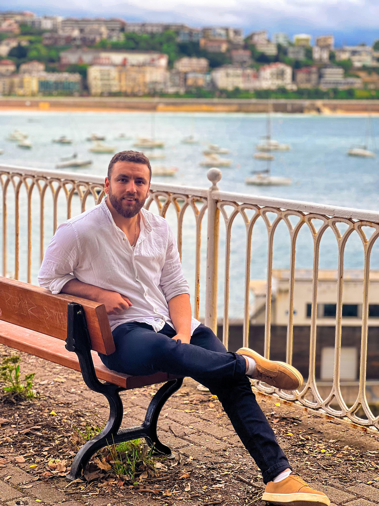
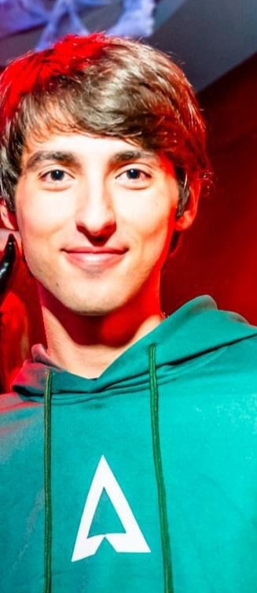

Sobre Nosotros:
En "ZONEX", creamos eventos únicos para amantes de los videojuegos, donde puedes sumergirte en el mundo gamer de manera completa. Ofrecemos desde torneos y zonas de videojuegos, hasta áreas de cosplay, juegos de cartas, y espectáculos en vivo. Todo esto acompañado de una variada oferta gastronómica que convierte cada evento en una experiencia inolvidable para la comunidad gamer. ¡Únete y vive tu pasión al máximo!

Me llamo Anouar, de 27 años, soy un apasionado desarrollador web con un fuerte enfoque en la creación de soluciones digitales innovadoras. Con habilidades en programación y diseño, me dedico a construir experiencias web funcionales y atractivas. mi compromiso con la tecnología me impulsa a seguir aprendiendo y mejorando en mi campo.

Soy Abdelaziz, Director de Informática y Tecnología con más de 5 años de experiencia en el sector. Mi enfoque está en liderar y optimizar procesos tecnológicos que impulsen a mi equipo y a nuestra organización hacia la excelencia digital. Me apasiona la innovación tecnológica y creo en el poder de las soluciones bien diseñadas y un equipo motivado para llevar a nuestros clientes a la vanguardia del sector.
Me llamo Jon, soy administrador de bases de datos aqui en la emrpesa Novaweb. Llevo con más de 10 años de experiencia en la gestión y optimización de sistemas de bases de datos. Especializado en MySQL, me enfoco en garantizar la seguridad y disponibilidad de los datos. Apasionado por la tecnología, siempre en busca mantenerme actualizado con las últimas tendencias del sector.
